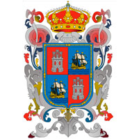

El estado fue nombrado así durante la época colonial, cuando los españoles denominaron la región, en nombre de los pueblos indígenas del actual centro del estado: los soctones. Este pueblo, de filiación y lengua otomangue, tuvo su principal centro político en Nandalumí, que fue llamada chiapan (en náhuatl: Chía-apan, ‘Río de la chía’)? por los mexicas, de donde deriva el nombre náhuatl de los soctones, es decir chiapanecatl. Este término fue castellanizado en plural como chiapanecas o chiapas. Los españoles combatieron contra los soctones que, según cuenta la leyenda, prefirieron arrojarse al río Grande de Chiapa desde el punto más alto del cañón del Sumidero, antes que someterse a los españoles y sus aliados. Este lugar era llamado en náhuatl Tepechiapan. De acuerdo con la traducción adoptada por el propio gobierno chiapaneco, Tepechiapan se traduce como Agua debajo del cerro (del náhuatl tepetl: cerro; chi: abajo; atl: agua, pan: río, lugar). En su clima presenta dos grandes regímenes climáticos: el cálido húmedo en zonas bajas, valles y mesetas de altura media y el templado húmedo en sierras altas y mesetas montañosas, principalmente en la Sierra Madre y el macizo montañoso de Los Altos. El estado de Chiapas es uno de los más biodiversos del país. Junto a la frontera con Guatemala se localiza la Selva Lacandona, que en su casi millón de ha de superficie alberga el 20% de las especies mexicanas. En el estado se encuentran cerca de 3.000 especies de plantas, entre ellas cacahuate, caoba, cedro rojo, ceiba, ciprés, encino, fresno, guácimo, guapaque, laurel, mangle, mezquite, pastizales, pino, quebracho y volador. La gastronomía en el estado de Chiapas cambia según la región; existiendo platillos comunes, como los tamales de elote y los de chipilín, plátanos machos rebanados y fritos, acompañados con crema y queso; así también del café, y el chocolate. En la zona de el Palenque y Agua Azul, existe un platillo elaborado con castaños, los cuales son similares a los que se dan en los climas europeos, su fruto cocido en sal es vendido a orilla de la carretera. En Ocosingo es tradicional y conocido por su calidad el queso. En la zona de los Altos, en específico en San Cristóbal encontramos una cocina mestiza, con gran influencia española, en la que es frecuente el uso del azafrán, de los jamones tanto crudos como cocidos, lo mismo que de la chanfaina y de un sinnúmero de panes recién horneados, así como los quesos rellenos, las chalupas coletas y toda clase de dulces, postres, aguardientes y mistelas que por su alto valor calórico ayudan a soportar los fríos de la región. En la plaza central de Chiapa de Corzo hay puestos en los que sirven pozol fresco, tascalate, y huevos chimbos. En Comitán hay también riquísimos platillos, como el cochito comiteco, el reconfortante cocido, los tamales de azafrán, los panes compuestos, las ciruelas pasas prensadas o los increíbles animalitos de yema. Las actividades económicas más destacadas son el turismo nacional e internacional, y en el ramo agropecuario la producción de café, miel, cacao, hortalizas, chile, plátano, mango, jamaica, coco, chocolate y azúcar de caña. Destaca también la producción artesanal como la elaboración de joyas a base de ámbar, de los municipios de El Bosque y Simojovel de Allende, los trabajos en madera y barro, la laca y la talabartería tradicional.
